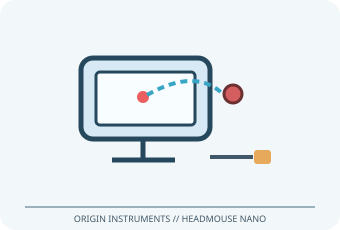

[ ADAPTIVE AND SWITCH-ACCESS CONTROLS // IDENTIFIED COMPONENT ]
Origin Instruments HeadMouse Nano
USB head-pointing mouse that tracks a small reflective target on the user to move the on-screen pointer.

MODEL IDENTIFICATION: HeadMouse Nano (model name; verify unit label/revision). Confirm the exact label, regional suffix, revision, receiver/accessories, software and bundle before service or compatibility claims.
Model specifications
| Catalog subcategory | Adaptive and switch-access controls |
|---|---|
| Exact device / model / SKU | HeadMouse Nano (model name; verify unit label/revision) |
| Device and control operation | USB mouse/HID interface; infrared optical tracking of a reflective target. A 3.5 mm stereo jack accepts one or two compatible external switch clicks. |
| Host interface | USB mouse/HID interface. |
| Switch/control inputs | USB mouse/HID interface; infrared optical tracking of a reflective target. A 3.5 mm stereo jack accepts one or two compatible external switch clicks. |
| Mounting and adjustability | Use the supplied universal bracket/adhesive mounting kit or a compatible device mount; aim the sensor at the target and secure it near the display. Adjust sensor angle/placement and pointer settings; target is worn on glasses, hat or forehead as suitable. |
| OS / host compatibility | Standard USB mouse hosts, including supported Windows, macOS, ChromeOS and other HID-capable computers/devices. Host accessibility functions and USB adapter/power support vary; check Origin manual for the unit revision and device. |
| Accessibility considerations | Hands-free pointer movement supports alternative access; external switches or dwell-click software can supply selection. Fit and calibration should accommodate posture, involuntary motion, fatigue and personal space. |
Accessibility and safety notes
Hands-free pointer movement supports alternative access; external switches or dwell-click software can supply selection. Fit and calibration should accommodate posture, involuntary motion, fatigue and personal space.
Secure mount and cable away from movement paths; do not attach adhesive to unsuitable screen coatings. Avoid prolonged uncomfortable posture, glare or skin irritation from target adhesive; stop if discomfort occurs.
Document observed condition separately from manufacturer specifications. Test activation and host response in a controlled, non-safety-critical setup; record accessories, host OS, driver/app and firmware versions.
Manufacturer and support sources
- Origin Instruments access-device documentation libraryManufacturer/support reference for model identification and setup. Confirm applicable region, hardware revision and bundle.
- Origin Instruments HeadMouse Nano user manualManufacturer/support reference for model identification and setup. Confirm applicable region, hardware revision and bundle.
Support pages and compatibility lists can change. Retain the manual revision used for a physical-device assessment.